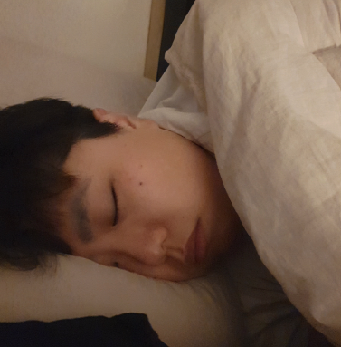

22.06.01
6월의 첫날을 가볍게 핫도그로 시작하는 우리
닝우는 핫도그에 아이러브유를 써주었다
뒷면에는 김도하!😊
귀여운 뽀로로를 아이클레이로 만들었다
어느샌가 내 태블릿에 붙인 닝우
22.06.02
떡국은 닝우표가 제일 맛있다
나는 이제 다른 떡국은 못 먹게 됐다
22.06.03
본인이 떡 같다던 언니와 찰칵 !
진지하게 전담을 머리에 올리려는 언니... 귀엽다...
노릇노릇한 떡구이와 결이사를 보는 우리
22.06.05
아웃백 투움바 파스타 노래를 부르는 닝우와 아웃백을 시켜먹었다!
누가 이렇게 예쁘게 글자를 조각했대~
내가 먹고 싶어하던 카레를 하는 동안 닝우가 예쁘게 이니셜을 만들었다
너무 예뻐서 먹기 아까웠다
22.06.07
어딘가에 놀러간 자기가 사진을 보내왔다 안녕🥰
나도 보답으로 빵 먹는 영상을 보내줬다
22.06.09
누가 이렇게 멋지게 머리하고 예쁘게 있지? : 닝우
닝우는 이 머리를 하고 있을 때 너무 섹시하다
22.06.10
규동처럼 생긴 소고기덮밥을 먹으며 미스터트롯을 봤다!
한가한 일상이다
22.06.13
더운 여름 아이스크림을 입에 물고 장난치는 닝닝이
너 그 빵 아직도 먹고 있어?
22.06.15

축구다!! 우리는 빔으로 축구를 보며 응원했다😊
닝우가 선물해준 빔을 아주 유용하게 쓴다 고마워!
22.06.16
가자고 말만 하던 집 앞 가게에 떡볶이를 먹었다
돌아올 때 싸운 건 안 비밀😆
22.06.18
안경다시야 안녕
동글동글 김다시와 네모네모 닝무
김진또씨가 찾아와서 난바우동을 같이 먹었다

제 집처럼 편해보이는 김진또씨

고양이다! 우리는 후딱 음성으로 내려갔다
여름 휴가를 보내기 위해서다
야옹이가 귀여워 한 입에 넣고 싶어하는 닝우다
떡볶이도 먹고 치킨도 먹었다
나는 마시지 않았지만 술도 왕창 먹었다
술도둑엔 역시 차돌박이 숙주볶음이지~
다들 맛있게 먹어서 다행이었다
산딸기를 잔뜩 따먹었다
어렸을 때 시골 할머니댁 갈 때 말고는 잘 못 먹었는데
아주 많이 있어서 반가웠다
취해서 휴대폰을 얼굴에 올리고 싶어하는 닝우
22.06.19

양세찬 수염이 된 닝우와 나는 물놀이를 하러 계곡에 왔다!
사진은 없지만 김진또씨도 같이 있다
이때 구워먹은 고기 정말 맛있었다😋
물이 깊어 구명조끼를 하고 놀았다
물이 아주 시원했던 기억이 난다 오붓한 우리
물놀이를 다 하고 집에 가는 길에
꽈배기를 사먹었다!
닝우는 꽈배기, 도너츠 같은 빵 종류를 좋아한다
집에 거의 도착해서 저녁을 먹었다
오늘 저녁은 누룽지탕과 짬뽕이었다!
닝우는 전화를 하느라 바빠서 잘 먹지 못했다🥲
22.06.23
잘 자는 닝닝이는 천사 아가 같다
닝닝이가 태어나서 처음으로 텐동을 먹어봤다
나랑 처음 먹는 게 참 많다 그래서 좋다
22.06.24
내가 겨울왕국을 보고 싶어해서 틀 준비를 하고 있다
사진엔 담기지 않았지만 겨울왕국에서 나오는 흥겨운 노래에 맞춰
고개를 신나게 흔들고 있다
렛잇고~ 렛잇고~ 여름이라 시원한 영화를 봤다
닝우가 재밌어해서 좋았다

역시 점심은 담꾹 부대찌개!

닝우는 집 앞에 있는 제빵왕 빵집을 참 좋아한다
빵을 사오고 신나서 일렬로 줄을 세웠다
며칠 떨어져 있어야 한다는 사실에
침대에 눈물자국 2개를 남긴 닝우... 너무 귀엽다...
22.06.25
슬퍼하는 닝우를 위해 선물을 준비했다!
퇴근하고 볼 수 있게 포스트잇을 남겨두었다
그림을 잘 못그리는 편이라 포스트잇을 꽤 많이 버렸다
어떻게 날 찾았을까 사랑해요
이 무렵 나는 공부 중이었는데 하루 일과를 딱 지키기 위해서
닝우 대장님께 보고했다
22.06.26
공부하기 싫어서 또 웃긴 동영상 찍는 애
열심히 계획을 보고하는 모습이다

전담은 집에서 피지만 연초는 바깥에 있는 흡연구역에서 핀다
안경을 부숴먹은 닝우는 동글이 안경을 쓰고
냄새 배는 게 싫어서 집게로 피고 있다

6월의 마지막 날! 나는 친구들에게 저번에 먹은 김치탕을 묘사해줬다

닝우랑 먹었던 김치탕 정말정말 맛있었는데😋